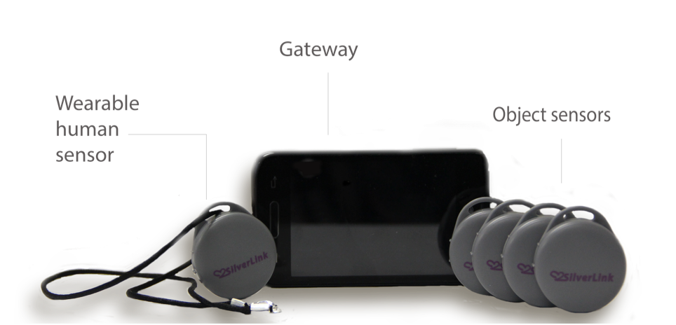

安装与设置
SilverLink产品中包括一个网关，4个物件传感器和1个人体传感器。

安装
设置您的SilverLink系统是很容易的！只需要要将你的网关插入电源，并在房子间里布置传感器。一旦接通电源，你的系统就可以使用了。不需要互联网或者额外的设备。

您可以选择包括冰箱门，药丸盒，椅子等位置安装传感器。传感器位置和用于监测的应用如下表所示：
| 建议安装传感器的位置 | 监测应用 |
|---|---|
| 药盒 | 用药次数和时间 |
| 冰箱 | 用餐次数和食物摄取 |
| 浴帘 | 浴室使用 |
| 前门 | 出入家门 |